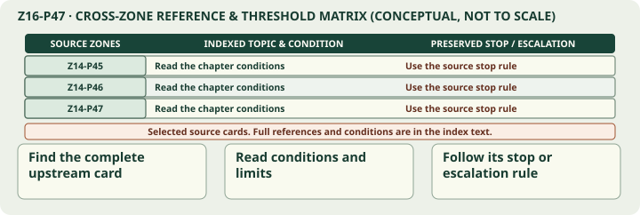

Z16-P47 · Field reference atlas · New manuscript
USDA, NCHFP Canning Method, Acidification and Altitude Matrix
Preserve exact USDA, NCHFP food-preservation decision boundaries separating high-acid water-bath, steam canning from mandatory low-acid pressure canning.
When it applies · All home canning planning, recipe selection, and post-processing seal inspection in Z14.
Equipment · Full offline reader (Z14), primary zone cards, and local emergency and agency references.

Actions
- Route foods strictly by pH and tested USDA, NCHFP recipe: low-acid foods (pH > 4.6: vegetables, meats, poultry, fish, beans, soups) MUST be pressure-canned—NEVER water-bath, oven, open-kettle, or multi-cooker canned (Z14-P45..P56).[A03, P11, P13]
- Follow exact tomato acidification (citric acid or bottled lemon juice even when pressure-canning per NCHFP, P22), reject tomatoes from frost-killed, dead vines, and adjust boiling time or pressure PSI for elevations above 1,000 feet (Z14-P49, Z14-P55).[A03, P12, P22]
- Inspect cooled two-piece lids without screw bands (Z14-P59) and treat bulging, leaking, spurting, or suspicious jars under NCHFP botulism detoxification, disposal without tasting—calling 911 immediately for any neurologic botulism signs (Z14-P61, Z14-P62, P23).[A03, P15, P23]
Failure recognition · Omitting tomato acidification, skipping altitude PSI boosts, or altering salsa, vegetable ratios creates fatal Clostridium botulinum toxin risk.[P11, P13, P22, P23]
Verify · Tested USDA, NCHFP recipe, exact acid, altitude adjustment, 10-minute steam vent, and zero-taste spoilage rules remain intact.[P11, P13, P22]
Stop or change course · Stop canning immediately if an untested family recipe, uncalibrated dial gauge, or oven, open-kettle shortcut is suggested.[P11, P13]
Evidence and editorial notes
- A03 · CDC · How to Make Water Safe in an Emergency (2024-09-19)
- Section: Cross-zone public-health, water, medicine, and sanitation linkage · Conditions: Indexing Z04, Z10, Z13, and Z14 hygiene, boiling, and clinical red flags
Support: Cross-referencing water treatment, wound care, cold-chain food safety, and poison escalation preserves consistent public-health thresholds across zones.
Limitations: Condensed tables never authorize skipping altitude boiling rules, chemical-source rejection, or clinician evaluation. · Conflicting evidence: None noted.
Editorial note: Prevents cross-zone public-health drift. · Specialist reviewer: Public-health reviewer
Primary source · checked 2026-11-24 - P11 · NCHFP · Drying Foods Safely (current web edition)
- Section: Drying Foods > Pretreatment, Temperature Control, Airflow, and Conditioning · Conditions: Electric dehydrators, controlled low ovens, or approved solar dryers for fruits, herbs, vegetables, and jerky
Support: Control temperature, low humidity, and continuous airflow simultaneously to remove moisture before spoilage occurs; blanch vegetables where directed, heat meat to safe internal temperatures per NCHFP jerky guidelines, and condition dried fruits to equalize residual moisture before airtight storage.
Limitations: Case-hardening (too hot early) traps wet interiors that mold in storage; open-air outdoor drying fails in humid climates like Upper Midwest summers. · Conflicting evidence: None; separates safe controlled dehydration from high-risk raw-meat drying.
Editorial note: Grounds dehydration equipment, jerky safety, and moisture-equilibrium checks. · Specialist reviewer: Food preservation and food safety specialist
Primary source · checked 2026-11-24 - P12 · NCHFP · Freezing Foods Safely (current web edition)
- Section: Freezing Foods > Blanching, Packaging, 0°F Storage, and Thawing · Conditions: Household freezers maintaining 0°F (-18°C) or lower
Support: Blanch most vegetables per tested times to inactivate quality-degrading enzymes, chill promptly, package in moisture-vapor-resistant freezer wrap/containers leaving liquid expansion headspace, freeze at 0°F or below, and thaw safely in the refrigerator (never on the counter).
Limitations: Freezing halts microbial growth but does not kill all pathogens; thawed foods require prompt safe cooking/handling. · Conflicting evidence: None; connects freezing quality control with Z15 outage loss decisions.
Editorial note: Core freezing and safe thawing evidence in Z14. · Specialist reviewer: Food safety and Extension preservation
Primary source · checked 2026-11-24 - P13 · NCHFP · Fermenting and Pickling Foods (current web edition)
- Section: Fermenting and Pickling > Salt Ratios, Vinegar Acidity, and Submerged Brine · Conditions: Tested lacto-fermented vegetables (sauerkraut/pickles) and vinegar quick-pickles
Support: Use standardized 5% acidity vinegar for tested pickle recipes and exact weighed/measured canning-and-pickling salt (not iodized/anti-caking salt) plus clean food-grade crocks and submerged weights for lacto-fermentation at controlled temperatures.
Limitations: Altering salt/vinegar ratios or allowing surface mold/scum in warm rooms causes spoilage and unsafe pH drift. · Conflicting evidence: None; separates tested fermentation/pickling from improvised brining.
Editorial note: Grounds fermentation, pickling, and acidity verification cards. · Specialist reviewer: Food microbiology and Extension preservation
Primary source · checked 2026-11-24 - P15 · FEMA / Ready.gov · Emergency Food Supply (current web edition)
- Section: Emergency Food Inventory > Non-Perishable Rotation, Dietary Needs, and Tools · Conditions: Household multi-day to 30-day emergency pantry planning
Support: Build a rotated pantry of familiar shelf-stable foods requiring minimal water and no refrigeration (canned proteins/vegetables, dry grains/legumes, nut butters, infant/medical/pet diets), keep a manual can opener, and mark purchase/rotation dates clearly (FIFO).
Limitations: Do not invent unverified multi-decade shelf lives; commercial "Best By" dates reflect quality while damaged, rusted, or dented-seam cans pose safety hazards. · Conflicting evidence: None; aligns with FSG-4 and NCHFP storage hygiene.
Editorial note: Grounds household food inventory, FIFO rotation, and can-integrity screening. · Specialist reviewer: Household preparedness and food safety
Primary source · checked 2026-11-24 - P22 · USDA / NCHFP · Canning Tomatoes Introduction (USDA 2015 revision)
- Section: Quality; Caution; Acidification; pressure alternative · Conditions: NCHFP whole, crushed or juiced tomato procedures, recipe and jar size specified
Support: Use the complete tested recipe and its acidification choices. Approved pressure alternatives still include acidification. Reject tomatoes from dead or frost-killed vines.
Limitations: Does not transfer to salsa, mixed products or untested recipe substitutions. · Conflicting evidence: See A02 claim audit for boundaries.
Editorial note: Added in A02 to separate a consequential source boundary. · Specialist reviewer: Extension food preservation
Primary source · checked 2026-11-25 - P23 · CDC · Symptoms of Botulism (2024)
- Section: Foodborne botulism signs and urgent action · Conditions: Possible ingestion of suspect preserved food, particularly with neurologic symptoms
Support: Trouble swallowing or breathing, vision changes or weakness can indicate a medical emergency. Seek immediate emergency care for compatible symptoms.
Limitations: Symptoms alone cannot establish a diagnosis. Contact local public health or Poison Control for suspected exposures and disposal. · Conflicting evidence: See A02 claim audit for boundaries.
Editorial note: Added in A02 to separate a consequential source boundary. · Specialist reviewer: Public health and emergency medicine
Primary source · checked 2026-11-25
Source lineage · New manuscript (Z16 P20 preservation index) · Classification · New manuscript.